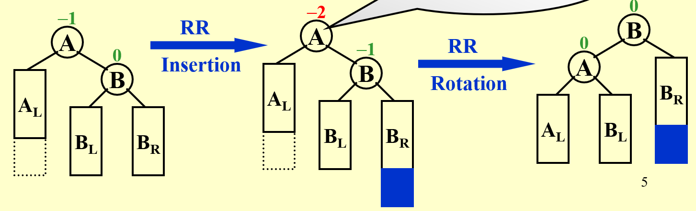
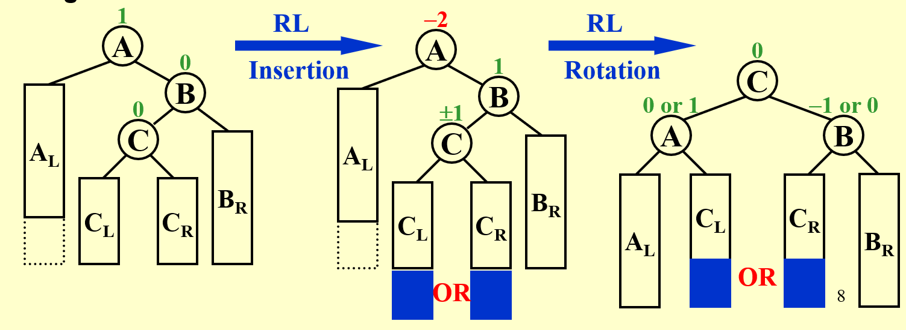
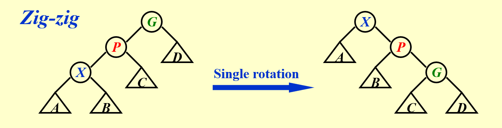
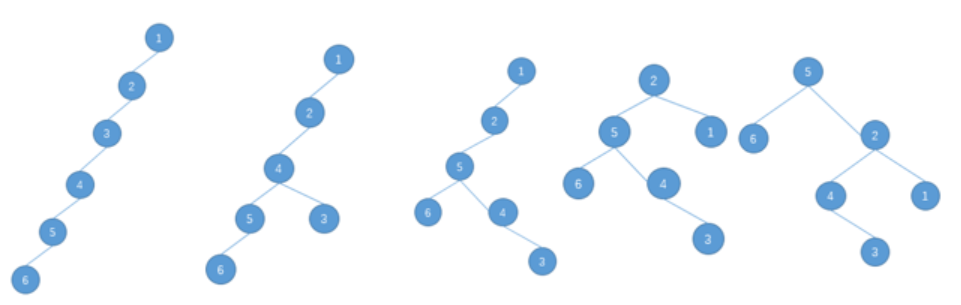

class 1/2024.2.27¶
chapter 0：课程要求¶
评分标准： 1. homework/10
-
discussion/10
-
project+peer review/30（including bonus）
project共8个，可选其中2个来做
需要pre，从3人中随机抽取1人
-
midterm/10
-
final/40
chapter 1：AVL Trees, Splay Trees, and Amortized Analysis¶
AVL Tree:¶
目的及定义¶
- 加快搜索速度（通过降低树的高度）
原因是虽然说树的搜索速度是O(logn)，但由于树形状的不确定性，有较大概率呈现出O(n)的结果。
本质是二叉搜索树
因此可以理解为，AVL Tree的操作方式是：优化何者作为**根**的元素。
由此，可以考虑AVL Tree的定义：
T为height balanced当且仅当： - T_L与T_R为height balanced - |h_L-h_R|\leq 1
同时定义balance factor: BF(node) = h_L-h_R。
则我们可以将AVL Tree定义为：
对任意节点p，BF(p) = -1或0或1
操作：旋转¶
显然，我们希望所有的树尽可能地变为AVL Tree，为此，我们需要通过操作来纠正树的根节点。
这种操作一般是伴随建树而进行的，否则调整会变得困难。
当对根节点p，BF(p)超过了-1到1的范围，说明此时需要调整。
对此，一共有四种情况： - 左节点的左节点多出：LL - 左节点的右节点多出：LR - 右节点的左节点多出：RL - 右节点的右节点多出：RR
RR/LL具体的操作如下：
举例：对一个AVL Tree的根节点A，有A_L, A_R=B, B_L,B_R均存在
插入一个节点，发现在B_R处且打破AVL的平衡
则令： - B为根节点 - B_L=A, B_R=B_R - A_L=A_L,A_R=B_L
于是调整完成，结果为AVL Tree。 
RL/LR具体的操作如下：（事实上就是再往下一层来调整）

注：此处较难理解：事实上树的可能问题只有这四种形状，要注意到可以通过调整子树来解决。
这也就是为什么LR和RL要拿出来单独说，这是因为LL和RR在两层内就可以解决了，但LR和RL必须要三层才能发现问题。
在操作结束后，是以所处理的树此时的根节点为第一个节点，然后接着往上回溯。 这里有待论证是否正确！
- 如何检测是哪种情况呢？
- 由于出现了RL/LR的情况，我们需要确认**两层**BF的值。
- LL：½
- RR：-1/-2
- LR：-½
- RL：1/-2
经过不同的举例发现，检测所需要的BF值只需要两层即可，并且经过实践已经得到验证。
（事实上这也让我们能够更好的理解LL/RR/RL/LR的意义）
时间复杂度通过类似斐波那契数列的方式解决，此时确定为O(logn)。
Splay Tree:¶
与AVL Tree对比：¶
相比于AVL Tree，Splay Tree不再要求每次插入都进行检查。
（预处理）：amortized time: 对于整个算法复杂度为O(logn)的算法，其中某些操作为O(n)（但不多），这是被允许的。
这种方式叫做amortized time（摊还时间）。
相比于AVL Tree, Splay Tree更偏向于应用，在**寻找**或**删除**某个节点时，它会“顺手”将这个节点向上移动，从而令下一次提取更快。
这利用到了计算机的**局部性原理**。
然而，Splay Tree处理后的树终究不是完全的AVL Tree，因此单纯用AVL的方式是行不通的。
方法：zig-zag/zig-zig¶
从探测到处理，大部分沿用AVL的方式，但对于单旋（即LL/RR）要求更严一些：
我们要求做两次单旋而非一次，具体操作如下：先将P与G交换，再将G与X交换。

另外，调整后的下一步与AVL也相同。
应用¶
寻找¶
我们以下图把节点5转到根节点为例： 
删除¶
对某个节点的删除，我们做以下操作：
- 将这个节点旋到根节点
- 将这个节点删除，于是二叉树一分为二
- 在左子树中找到最大的元素（显然它比右子树的所有元素都要小）
- 让右子树作为这个元素的右子树即可
时间复杂度分析：¶
（此部分需要重新细致推导） worst-case bound \geq amortized~bound \geq average-case bound
以multi-pop为例，解释三种分析方法：
对multi-pop的解释：
假设我们有一个堆，现在我们要对它做n次push/pop/multi-pop操作。
（其中multi-pop的函数写作void multipop(int k, heap s)）
multi-pop要做的是，做k次pop操作，至s为空为止。
现在我们要探究这样操作的时间复杂度。
显然，不同操作需要的时间是不同的。
- aggregate analysis (聚合分析)
对于总时间T(n)，摊还时间即为T(n)/n.
- accounting method (核算法)
对不同的操作采用不同的代价，当摊还代价大于实际代价时可以“存储”这个时间。
在push时，我们可以额外加一些代价，在pop和multi-pop时来使用。
这是一个比较形象的方法，主要是为了引出下一种方法（代价的量化等并没有一个较好的标准）
- potential method (势能法)
更为定量的算法，将核算法中的“代价”定量为一个函数。
这里主要看下PPT，事实上PPT上解释的比较清楚了，关键是在于这个函数在起始的状态应当是最小的。